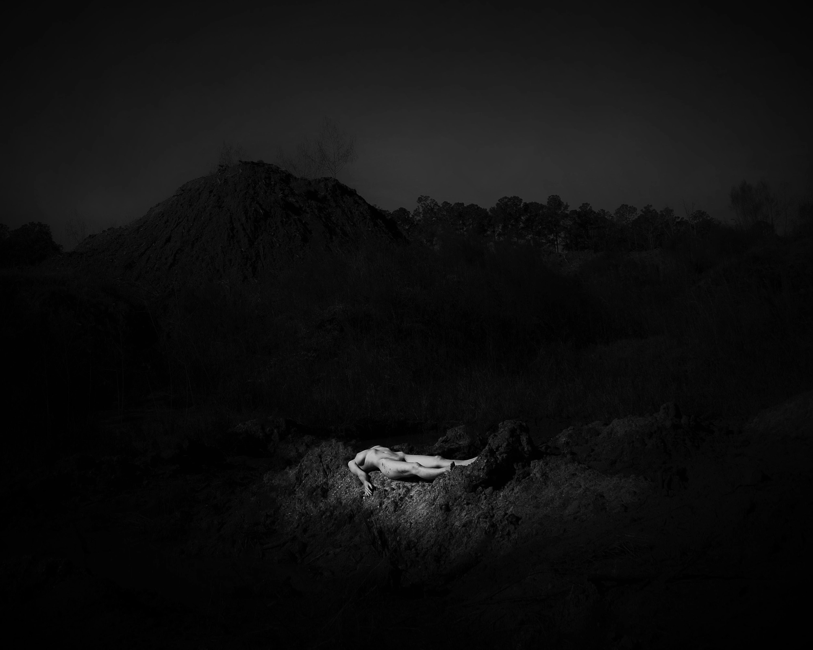

Cherry Blue, alias n0netre, est une photographe et écrivaine basée à Montréal. Étudiante au doctorat en philosophie, elle se spécialise en éthique et en féminisme, en soulevant le voile sur le travail du sexe et en s'alliant aux sorcières qui ont traversé l'histoire. À travers son œuvre, elle explore les thèmes de la fuite, de la fusion avec la nature, de l'essence insaisissable de l'être et de la nudité comme retour aux fondements métaphysiques.